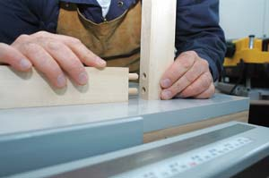
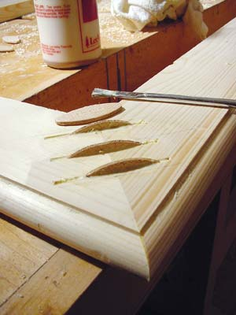
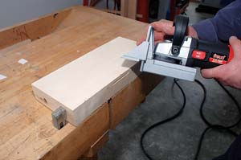
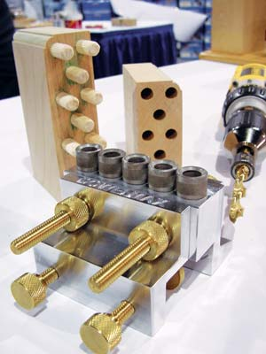
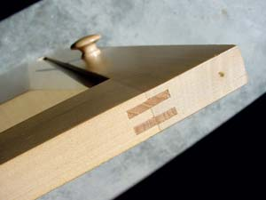
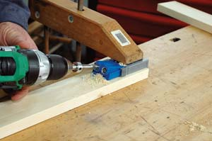
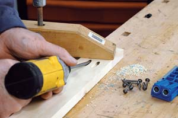

Woodworking Basics
Use these three powerful techniques to bring your wood projects together.
Story and Photos by Steve Maxwell
June/July 2007
If you’ve got a vision for building your own furniture, storage shelves, cabinets, tables and various built-ins, there’s good news: Success has never been easier. Three revolutionary options now make it much simpler to create the kind of strong, attractive, long lasting joints necessary for woodworking success. You don’t need to spend a lot of time or money tooling up, either. You can become proficient in one afternoon with the wood joinery options you’ll learn about here.
You need to begin by understanding something fundamental about wood. You can’t simply shove the glue-covered edges of two boards together and expect the union to hold. Take a bookshelf, for instance. If you join the shelves to the uprights with glue alone, the joints will break under minimal stress. Glue is great, but it does have limitations. This is why most successful woodworking joints involve both glue and some form of interlocking connection. Understanding wood joinery is really about understanding your options for creating these all-important mechanical connections. New to woodworking? Take a look at “Woodworking Words,” below, for a glossary of basic technical terms you’ll find here.
DOWEL JOINTS
Dowels have been used to join wood for centuries, but that doesn’t mean they haven’t kept up with the times. You’ll find dowels in everything from antique furniture to barn frames, but modern refinements make dowel joints stronger, more accurate, and quicker and easier to create.
To make a dowel joint, drill holes in mating surfaces of wood. Half the length of the dowel goes into each hole, spanning the joint line between the two parts. (See first photo in Image Gallery.) It’s an easy concept to understand, but there’s a technical challenge: Pairs of holes drilled across a joint must be perfectly aligned with each other. Without a high level of precision, dowel joints simply won’t come together.
You can produce accurate dowel joint holes using nothing more than an ordinary drill and bit and a homemade drilling guide made from a block of hardwood. This is the traditional method cabinetmakers have used for centuries to guide dowel drilling, but there are easier ways to do it today. The simplest is a tiny device called a “dowel center.” (See second photo in Image Gallery.) These small metal cylinders have one flat end. The other end has a rim and a raised point at its center. Drill holes in one side of a joint, then insert dowel centers into all these holes before temporarily bringing the two parts of the joint together. The points on the ends of the dowel centers will mark the locations of the corresponding holes you need to drill in the mating part. As long as you drill each hole square to the face of the wood, you’ll get a reasonable fit.
Doweling jigs are an even more accurate way to regulate the location and angle of matching dowel holes. Numerous tool companies make doweling jigs; good ones can cost more than $100. Most include a built-in clamp that holds the jig steady on the wood during drilling.
Although you can buy 3-foot lengths of wooden dowel rod and cut 1-inch- or 2-inch-long pieces for use in building furniture and built-ins, there’s a better way. Ready-made “fluted” dowels cost very little money, they are already cut to length for joinery work, they have a more accurate diameter than dowel rod and have grooves pressed onto the outside surface to boost joint strength. These fluted grooves, produced as the dowels are compressed during manufacture, ensure that these dowels are truly round in cross section. Fluted dowels typically come in sizes ranging from one-quarter inch to one-half inch in diameter. You can use them to assemble everything from small projects to high-stress joints such as those between a table leg and apron.
BISCUIT JOINTS
If you want to tackle a wide range of woodworking joints with just one tool while dealing with the shortest possible learning curve, then biscuit joinery is ideal. This technology is mature and relatively inexpensive. Using a biscuit joiner (also called a plate joiner) is not only simple but safe, too: Cut matching slots in the mating pieces of wood using the hand-held power tool. Swab glue on a factory-made flat oval of hardwood (this is the “biscuit”), push the biscuit into one slot, then fit the other slotted wood part over the protruding half of the biscuit before clamping the whole thing together. Biscuits turn what would ordinarily be a weak butt joint into a very strong connection. They’re also one of the most versatile of all the joinery options, ideal for connecting everything from bookshelf parts and cabinet components to small and medium-sized door frames and even window or door trim before it goes up.
Biscuits come in three standard sizes: #0 are five-eighth inch by 1¾ inch; #10 are three-quarter inch by 2? inch; and #20 are 1 inch by 2? inch. A box of 1,000 biscuits costs less than $30, and each slot takes about two seconds to cut once you’ve got your biscuit joiner set up. You can buy a basic biscuit joiner for around $100, and pro-grade models cost less than $300. Machines have crept down in price substantially from the $800 level seen in the early 1980s. When patent protection ran out on the original Swiss design, held since 1955, the concept entered the public domain. Tool manufacturers around the world began making their own joiners, driving prices way down.
If you’re like I was before I tried biscuits, you may not believe these little ovals of wood could possibly be strong enough to do anything worthwhile - but they are, for two reasons. First, biscuits are compressed at the factory, and as they soak up water-based glue they swell and tighten within their grooves. Second, biscuits have a diagonal grain orientation, meaning they’re strong along both length and width.
Standard biscuit joiners use a fully enclosed, 4-inch diameter carbide-tipped blade that extends from inside a spring-loaded safety shroud as the tool is pushed into a piece of wood. It’s possible to hurt yourself with the tool, but you’d have to try pretty hard. Inherent safety is one reason biscuit joiners are ideal for beginners.
Before you attempt biscuit joints on any project, adjust the depth of the slot to be cut by your joiner. If the slots are too shallow, the biscuit won’t have enough room, preventing the joint from coming together fully. If the slots are too deep, joint strength will suffer because the biscuit will slip too far into one side of the joint during assembly. Ideally, each slot should be about one-thirty-second inch deeper than half the width of the biscuit. Check this by cutting a slot in a piece of scrap wood. Slip a biscuit all the way in and draw a line along its length where it meets the wood surface. Turn the biscuit end for end and repeat. The two lines should overlap each other, each located slightly past the center line of the biscuit. All biscuit joiners include controls to adjust slot depth. Once you’ve tweaked the depth properly, you won’t need to do it again.
To establish guides for your joiner, bring project parts together temporarily and mark pencil lines on both parts at the joint where you want each biscuit to be. A 12-inch wide bookshelf, for instance, is plenty strong with three #20 biscuits reinforcing each shelf-to-upright joint. Separate the parts and lay them down on a flat, clean surface. Align the center mark on the face of your biscuit joiner with the pencil mark on the wood part, then plunge the slot. Repeat for the corresponding lines on the mating part. Save yourself grief by assembling all biscuit joints without glue for a final check. If there’s a problem that prevents the joint from coming together fully, you’ll want to know about it before you have glue everywhere.
Although you can use biscuit joints almost anywhere, they make the most sense in three key applications. They offer an excellent way to join horizontal shelves and uprights in bookcases, cabinets and wardrobes. You’ll find them useful for joining the stiles and rails of traditional frame-and-panel doors. Biscuits are also ideal for reinforcing intricate joints that are initially assembled with glue. I especially like to use them in this way on the back faces of mirror and picture frames. Plunge a slot or two across the assembled joint, insert biscuits with glue, then sand off the protruding biscuit after the glue has dried. (See photo in Image Gallery.)
POCKET SCREWS
Imagine a wood screw driven at a shallow angle across the back face of a butt joint, connecting the two pieces of wood. This is what pocket screws are all about. You predrill holes for the screws in one part using a special jig, bring the parts together, then drive the pocket screws home. The joint is instant, surprisingly strong (though not quite as strong as a biscuit joint) and requires no clamps. The screws themselves draw the parts together tight.
Kreg Tool Company made pocket screws popular, and no one disputes that they make the best jigs for drilling pocket holes. You can get their simplest jig for about $50. For three times that, you get a model that can handle anything you’ll encounter building furniture. There are even professional pocket hole jigs for trim carpenters.
So exactly where do pocket joints make sense? If you’re building a floor cabinet, a bookcase, a set of kitchen cabinets or a run of frame-and-panel wainscoting, your design will probably include face frames to define rectangular openings. Assembling them is the perfect application for pocket screws. Dowels and biscuits work fine, too, but they both take considerably more set-up, clamping and assembly time. There’s also the challenge of aligning the mating halves of biscuit holes or dowel slots that span both parts of a joint - if you blow this detail, your parts won’t line up. There’s no such hazard with pocket screws. They’re first-rate for building wainscoting, fireplace mantels and other architectural details where one face of the wood is permanently hidden.
Since pocket holes are drilled on one side of the joint only, evening up mating pieces of wood before assembly isn’t restricted in any way. Just bring the parts together, align them perfectly with your fingertips, clamp them down to your workbench together to immobilize them, and drive the screws home. Release the clamp; that’s it - instant joint assembly, without waiting for glue to dry. In fact, you don’t need glue at all, though you can go ahead and put it on if it makes you feel better.
Is there a catch? Yes. The angled holes, an unavoidable part of pocket-screw joinery, are pretty ugly. You can buy angled dowels made especially to plug these holes, but the results still don’t look as clean and classic as biscuit or dowel joints, which leave no trace. This is why I restrict my use of pocket-hole joints to areas that won’t be seen after assembly.
I love traditional woodworking techniques and their long history. But innovations deserve praise, too. Using dowels, biscuits and pocket screws, you can produce excellent, durable and beautiful woodwork in a fraction of the time and cost that the old favorite techniques require. With a little wood and a few ideas, you’re ready to make good things happen on your homestead.
Woodworking Words
Biscuit: a factory-made flat oval of compressed hardwood
Butt joint: two or more parts that come together with no overlap or interlocking connection
Dowel: a length of cylindrical wood
Face frame: a frame, made of horizontal and vertical parts, that is attached to the front of a cabinet to provide the mounting points for doors
Miter joint: a connection made with equal angles cut on matching parts
Rail: a horizontal length of wood that defines the top or bottom edge of a cabinet door or opening
Stile: a vertical length of wood that defines a side of a cabinet door or opening
- Steve Maxwell’s Victorian-style house (see “A Handmade, Debt-free Home,” February/March 2007) is filled with wonderfully creative designs using these wood-joinery techniques.
|
 STEVE MAXWELL Dowel joints are rock-solid and easy to make using special doweling jigs. |
 STEVE MAXWELL Dowel centers show where to drill the holes on the adjoining piece of wood. |
 STEVE MAXWELL Typically, biscuits are completely concealed, but sometimes it’s simpler to set them into slots plunged into the back of preassembled joints. |
|
 STEVE MAXWELL This machine cuts slots for “biscuits” used to attach wood pieces to each other. |
 STEVE MAXWELL A doweling jig clamps onto wooden parts to guide the drill bit to create matching pairs of holes. The gray, interchangeable guide bushings on top of the jig come in several diameters. |
 STEVE MAXWELL Two #20 biscuits (trimmed after assembly) create a secure corner joint for frame and panel doors. |
|
 STEVE MAXWELL A jig guides the drilling of pocket screw holes. |
 STEVE MAXWELL The screws pull the joint tightly together. |
|